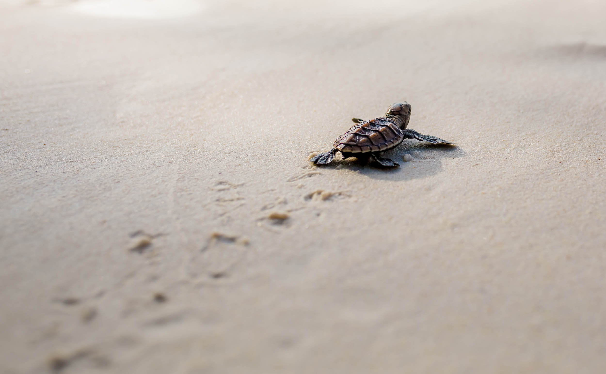
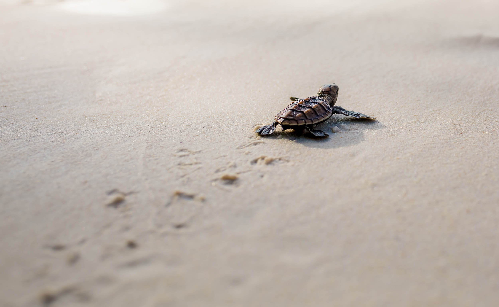

About
The sea turtle hatchery and rescue center is located only a short distance away from the Hikkaduwa town. The goal of this hatchery exists is to prevent the sea turtles from extinction. The amount of turtle eggs, shells and meat being illegally traded amount industry continues to rapidly increase and the survival of turtles during their early stages of life are some of the main reasons why the turtle population has been declining over the past years. The hatchery tries to salvage the turtle population while spreading awareness and teaching the locals and tourists about turtles and why they must be conserved.
What they do?
They take care of baby turtles, adult turtles and even the injured turtles that are rescued from the sea and work on improving condition before releasing them back into the ocean.
They collect turtle eggs by purchasing them from people who try to sell those illegally, from the beaches where sea turtles are more prone to come for nesting and leave their eggs buried in the sand.
They watch these turtle eggs, ensuring that those are stored under the required conditions for them to hatch. And once the egg hatches, the hatchlings are placed inside tanks filled with water for forty-eight hours, allowing them to gradually learn to swim before finally being released into the ocean once they’re ready.

 
